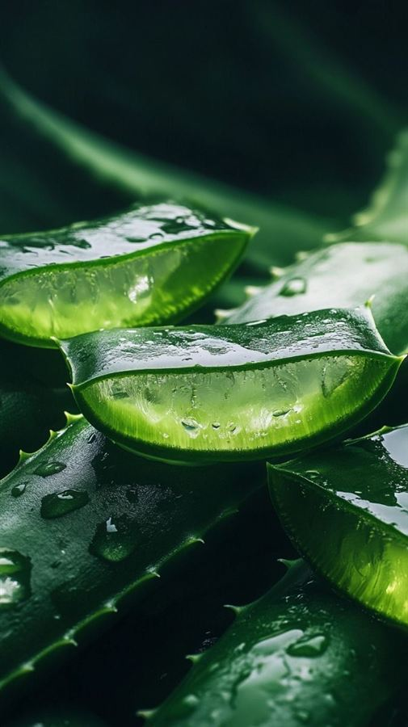
Cicatrizante, hidratante, anti-inflamatória, antisséptica, regeneradora celular e laxante (quando usada a casca). O gel é amplamente utilizado topicamente para tratar queimaduras (especialmente solares), feridas, irritações da pele, acne e psoríase.
FAMÍLIA: Asphodelaceae
SINONÍMIA: Babosa.
PARTES USADAS: Gel (mucilagem) interno das folhas.
DESCRIÇÃO: Planta suculenta que cresce em forma de roseta, com folhas grandes, carnudas, de cor verde-clara e com bordas espinhosas. Do centro da planta, pode surgir uma haste floral com flores amarelas ou alaranjadas.
CURIOSIDADE: Diz-se que Cleópatra usava o gel de Aloe Vera em sua rotina de beleza para manter a pele macia e jovem.
PRECAUÇÕES: O uso interno deve ser feito com cautela, pois a aloína (presente na casca) tem forte efeito laxativo e pode ser irritante. O gel tópico é geralmente seguro, mas pode causar alergia em algumas pessoas.
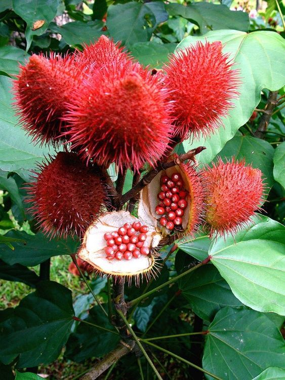
Fonte de corante natural (colorau), antioxidante e anti-inflamatório. Usado topicamente como repelente de insetos e protetor solar natural. As sementes ajudam na digestão.
FAMÍLIA: Bixaceae
SINONÍMIA: Colorau, Açafroa-do-brasil, Urucu.
PARTES USADAS: Sementes (arilo).
DESCRIÇÃO: Árvore de pequeno a médio porte, que pode atingir de 3 a 5 metros. Possui flores róseas e frutos em forma de cápsula espinhosa, que quando maduros se abrem, revelando sementes vermelhas e vibrantes.
PROPRIEDADES MEDICINAIS: As sementes são ricas em bixina (um potente antioxidante), carotenoides e vitamina A. Têm ação anti-inflamatória, digestiva, expectorante e cicatrizante. O pó é usado na culinária (colorau) e topicamente como corante e protetor contra raios UV e picadas de inseto.
CURIOSIDADE: Os povos indígenas da América do Sul e Central usam o urucum há séculos para pintar a pele em rituais e como forma de proteção contra o sol e insetos.
PRECAUÇÕES: Considerado muito seguro para uso alimentar e tópico. Em doses medicinais concentradas, deve ser evitado por gestantes.
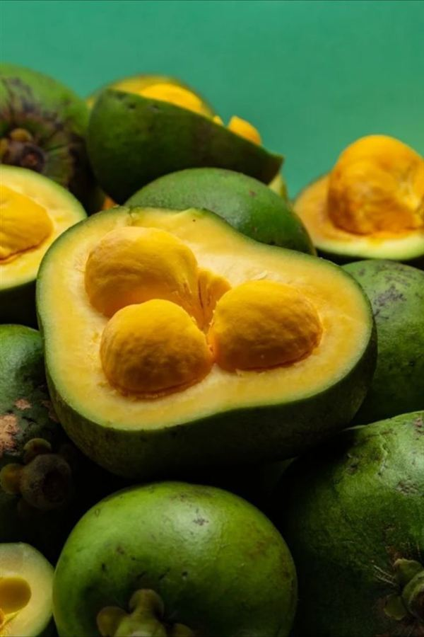
Nativo do Cerrado, seu óleo é usado como anti-inflamatório, cicatrizante e no tratamento de problemas respiratórios. Rico em vitaminas A e C e antioxidantes.
FAMÍLIA: Caryocaraceae
SINONÍMIA: Pequizeiro, piqui.
PARTES USADAS: Polpa do fruto e óleo.
DESCRIÇÃO: Árvore típica do Cerrado brasileiro, podendo atingir até 15 metros. O fruto é uma drupa de casca verde, que contém de 1 a 4 caroços revestidos por uma polpa amarela, macia e muito aromática.
PROPRIEDADES MEDICINAIS: O óleo de pequi, extraído da polpa, é rico em ácidos graxos, vitaminas A, C e E. Possui potentes propriedades anti-inflamatórias (usado para dores articulares) e antioxidantes. Popularmente, o óleo é usado em xaropes para combater bronquites e gripes.
CURIOSIDADE: O caroço do pequi é revestido por uma camada de finíssimos espinhos. Por isso, ele nunca deve ser mordido, apenas roído com extremo cuidado, o que é uma característica marcante do seu consumo.
PRECAUÇÕES: O maior perigo é mecânico: NUNCA morda o caroço, pois os espinhos podem se fixar na boca e garganta, causando lesões graves. O consumo da polpa é seguro.
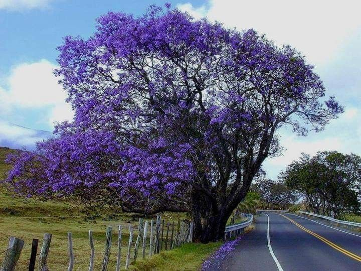
A casca interna (chá de Lapacho) é usada como anti-inflamatório, analgésico, antifúngico e para fortalecer o sistema imunológico.
FAMÍLIA: Bignoniaceae
SINONÍMIA: Pau-d'arco, piúva, ipê-rosa.
PARTES USADAS: Casca interna do tronco.
DESCRIÇÃO: Árvore de grande porte, podendo atingir 30 metros. Famosa por sua floração espetacular de cor rosa ou roxa, que ocorre no inverno, quando a árvore perde suas folhas. É a flor nacional do Brasil.
PROPRIEDADES MEDICINAIS: A casca interna é usada para fazer um chá conhecido como "Lapacho". É um poderoso anti-inflamatório, analgésico, antifúngico e antibacteriano. É usado tradicionalmente para tratar infecções, candidíase, úlceras e para fortalecer o sistema imune.
CURIOSIDADE: O nome "Pau-d'arco" vem do uso da sua madeira flexível e resistente pelos povos indígenas para a fabricação de arcos de caça.
PRECAUÇÕES: O uso medicinal deve ser feito com cautela. Não é recomendado para gestantes, lactantes ou pessoas que tomam medicamentos anticoagulantes. O consumo excessivo pode ser tóxico.
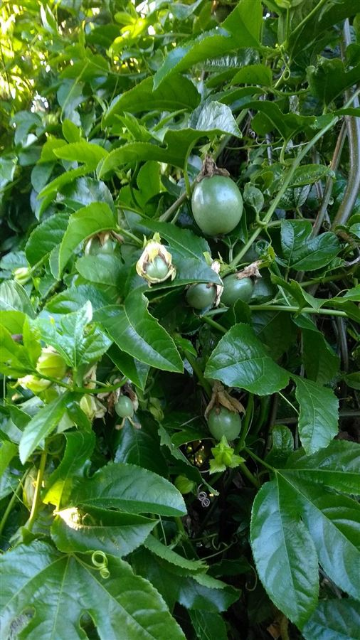
Principalmente as folhas são usadas como calmante natural, ansiolítico e sedativo leve, ajudando a combater a insônia, ansiedade e agitação nervosa.
FAMÍLIA: Passifloraceae
SINONÍMIA: Flor-da-paixão.
PARTES USADAS: Folhas (para chá medicinal), polpa do fruto (para suco).
DESCRIÇÃO: É uma planta trepadeira com gavinhas (estruturas que se enrolam). Possui flores muito características e ornamentais. O fruto, o maracujá, tem casca que pode ser amarela ou roxa, e interior com polpa gelatinosa e muitas sementes.
PROPRIEDADES MEDICINAIS: As folhas (e não o fruto) são a parte mais usada medicinalmente. O chá das folhas de maracujá (Passiflora) é famoso por suas properties calmantes, atuando como um ansiolítico natural e sedativo leve, sendo eficaz contra insônia, estresse e ansiedade. O fruto (suco) é rico em vitamina C e antioxidantes.
CURIOSIDADE: O nome "Flor-da-paixão" foi dado por missionários jesuítas no século XVII, que viram nas estruturas complexas da flor uma representação da Paixão de Cristo (a coroa de espinhos, os cravos, etc.).
PRECAUÇÕES: O chá das folhas pode causar sonolência. Não deve ser usado com outros medicamentos sedativos ou bebidas alcoólicas, pois pode potencializar o efeito.
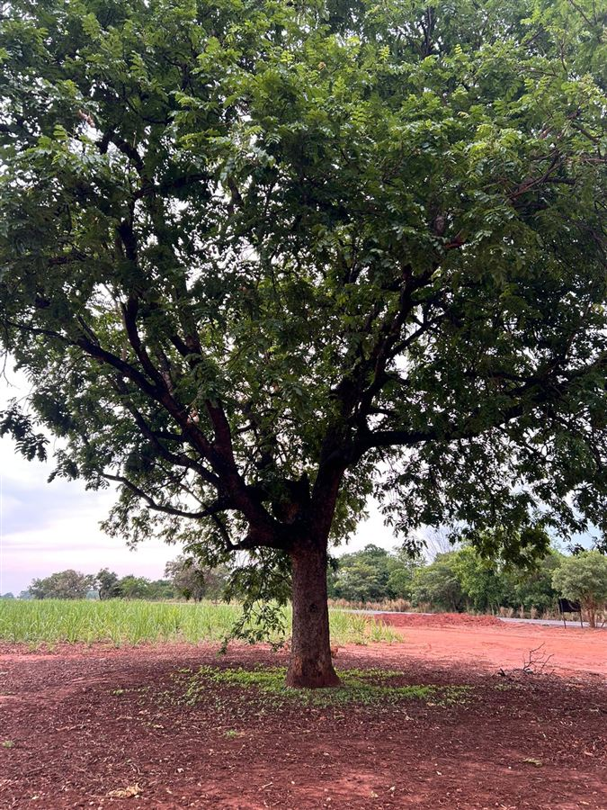
Rico em antioxidantes, proteínas e lipídios (ômega 9). O óleo da amêndoa é usado como antirreumático e as sementes torradas são consumidas como aperitivo, sendo comparadas ao amendoim.
FAMÍLIA: Fabaceae (Leguminosae)
SINONÍMIA: Cumbaru, cumaru, coco-feijão, baruzeiro.
PARTES USADAS: Amêndoa (semente), polpa do fruto, óleo da amêndoa.
DESCRIÇÃO: Árvore nativa do Cerrado, podendo atingir de 15 a 25 metros. O fruto é um legume de cor marrom, com polpa fibrosa e uma única semente (amêndoa) protegida por uma casca lenhosa muito dura.
PROPRIEDADES MEDICINAIS: O óleo extraído da amêndoa é usado como antirreumático. A amêndoa é rica em proteínas, lipídios (ômega 9), ferro e antioxidantes, sendo popular no combate à anemia e na prevenção de doenças cardiovasculares.
CURIOSIDADE: A amêndoa tem sabor semelhante ao amendoim, mas precisa ser torrada antes do consumo para neutralizar fatores antinutricionais que podem ser prejudiciais.
PRECAUÇÕES: A amêndoa deve ser consumida preferencialmente torrada. O consumo dela crua não é recomendado, pois contém inibidores de tripsina (fatores antinutricionais).
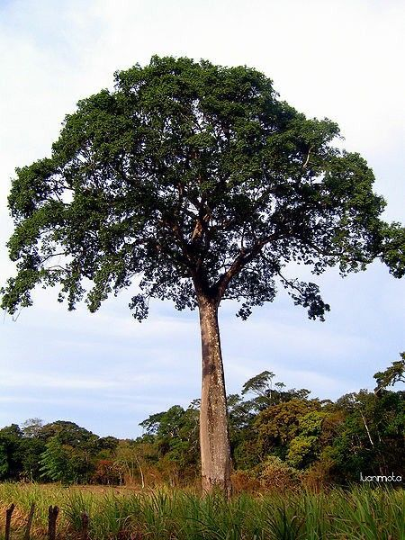
Potente anti-inflamatório, usado para dores nas costas e problemas respiratórios. A farinha da polpa é rica em ferro, cálcio e vitamina C, combatendo anemia e fortalecendo os ossos.
FAMÍLIA: Fabaceae
SINONÍMIA: Jataí, jutaí, jutaí-açu.
PARTES USADAS: Casca do tronco, folhas, resina (seiva) e polpa do fruto (farinha).
DESCRIÇÃO: Árvore de grande porte (15-40m) com copa ampla. O fruto é uma vagem lenhosa e dura, de cor marrom-escura, que contém sementes envoltas por uma polpa farinácea, seca e de odor forte.
PROPRIEDADES MEDICINAIS: O chá da casca é um forte anti-inflamatório, usado para aliviar dores (especialmente na coluna), e também é diurético (ajuda em infecções urinárias). A polpa é rica em ferro (combate anemia) e cálcio. A seiva (resina) é usada para problemas pulmonares.
CURIOSIDADE: O nome Tupi "iata'yba" significa "árvore de fruto duro". A polpa em pó tem um cheiro forte e característico, que rendeu o apelido de "fruta-chulé" em algumas regiões, apesar de ser muito nutritiva.
PRECAUÇÕES: O consumo é considerado seguro. A polpa é muito seca (farinácea), por isso geralmente é consumida misturada em vitaminas, sucos, ou em receitas de bolos e pães.
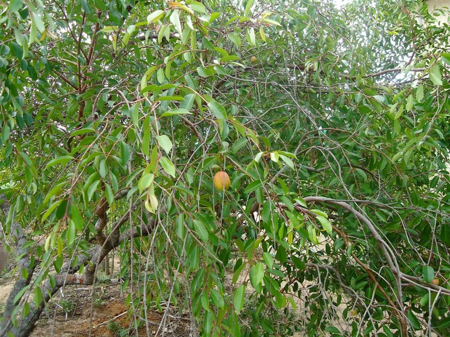
O "leite" (látex) da planta é usado como cicatrizante e anti-inflamatório. O chá das folhas e da casca é usado para controlar hipertensão e diabetes. O fruto é rico em vitamina C.
FAMÍLIA: Apocynaceae
SINONÍMIA: Mangabeira. O nome vem do Tupi "mã-gá-bá", que significa "coisa boa de comer".
PARTES USADAS: Fruto (polpa), látex ("leite") do tronco, casca e folhas.
DESCRIÇÃO: Árvore de porte médio (2-10m) com tronco tortuoso. Exsuda um látex branco (leite) quando cortada. O fruto é uma baga arredondada, com casca amarela ou alaranjada, polpa branca, macia e suculenta.
PROPRIEDADES MEDICINAIS: O látex tem propriedades cicatrizantes, anti-inflamatórias e gastroprotetoras (usado para úlceras). O chá da casca e das folhas é popularmente usado para baixar a pressão arterial e controlar o diabetes. O fruto é muito rico em vitamina C.
CURIOSIDADE: Durante a Segunda Guerra Mundial, o látex da mangabeira foi utilizado para a fabricação de borracha, ganhando importância estratégica no Brasil.
PRECAUÇÕES: O fruto só deve ser consumido bem maduro (geralmente quando cai no chão). O fruto verde ou o látex em excesso podem ser tóxicos e muito irritantes para o sistema digestivo.
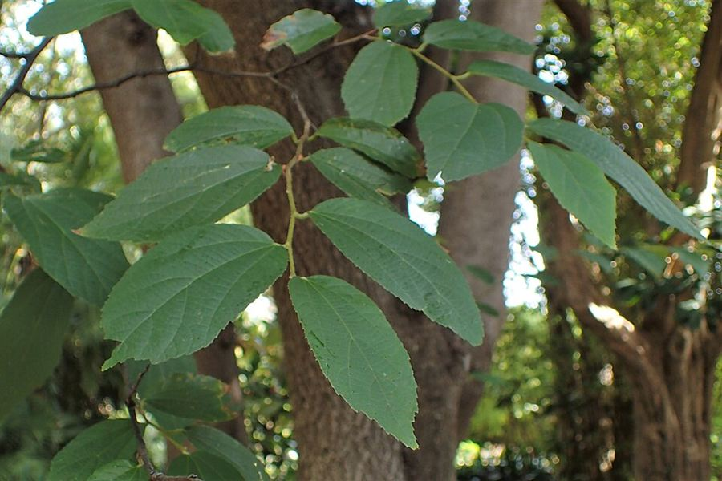
Foto: Krzysztof Ziarnek, Kenraiz · CC BY-SA 4.0 · Wikimedia Commons
Luehea divaricata
Uso tradicional em preparações populares.
NOME CIENTÍFICO: Luehea divaricata.
DESCRIÇÃO: Árvore encontrada em diferentes regiões do Brasil, conhecida por suas folhas largas e flores delicadas. Pode ocorrer em áreas de Cerrado e em outros ambientes brasileiros.
USO TRADICIONAL: Uso tradicional em preparações populares.
CURIOSIDADE: A espécie também é conhecida como açoita-cavalo e pode contribuir para a recuperação de áreas degradadas.
SEGURANÇA: Não há forma de consumo medicinal que possa ser recomendada com segurança.
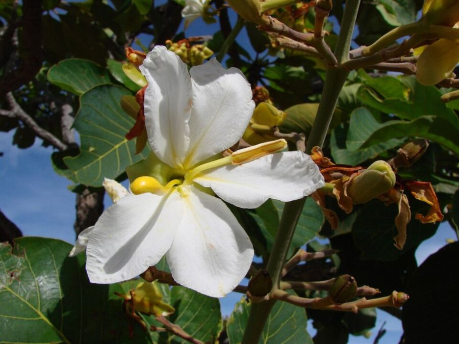
Foto: João Medeiros · CC BY 2.0 · Wikimedia Commons
Salvertia convallariodora
Empregado em práticas tradicionais regionais.
NOME CIENTÍFICO: Salvertia convallariodora.
DESCRIÇÃO: Árvore característica de áreas do Cerrado, especialmente de ambientes abertos e solos pobres em nutrientes. Apresenta flores claras e pode atingir vários metros de altura.
USO TRADICIONAL: Empregado em práticas tradicionais regionais.
CURIOSIDADE: É uma planta adaptada às condições do Cerrado, onde muitas espécies precisam resistir a períodos de seca.
SEGURANÇA: Evitar ingestão medicinal sem avaliação especializada.
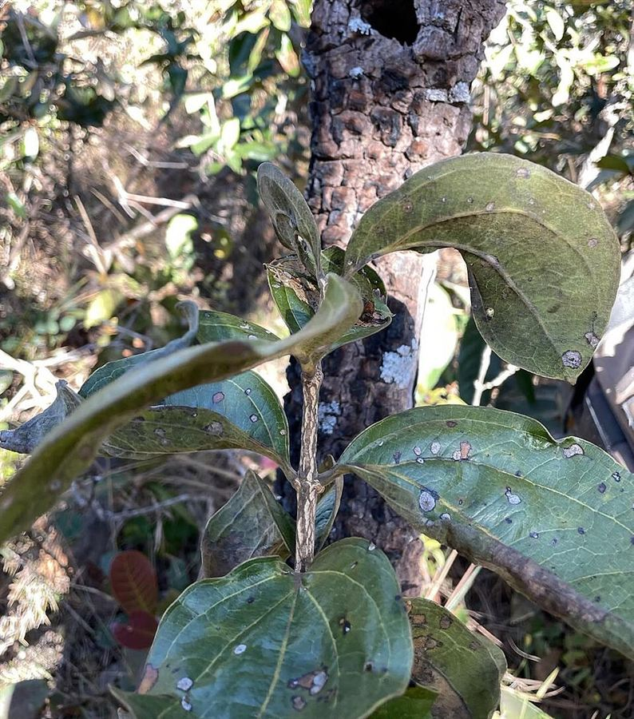
Foto: Annaclara 1123 · CC BY-SA 4.0 · Wikimedia Commons
Strychnos pseudoquina
Tradicionalmente associada a problemas digestivos e febris.
NOME CIENTÍFICO: Strychnos pseudoquina.
DESCRIÇÃO: Espécie arbórea nativa do Brasil, encontrada principalmente em formações do Cerrado. É conhecida pelo sabor amargo de partes da planta.
USO TRADICIONAL: Tradicionalmente associada a problemas digestivos e febris.
CURIOSIDADE: O nome popular quina está relacionado ao uso tradicional de plantas amargas em diferentes regiões. Isso não significa que todas possuam as mesmas propriedades.
SEGURANÇA: Não preparar chás ou extratos por conta própria; a segurança precisa ser avaliada.
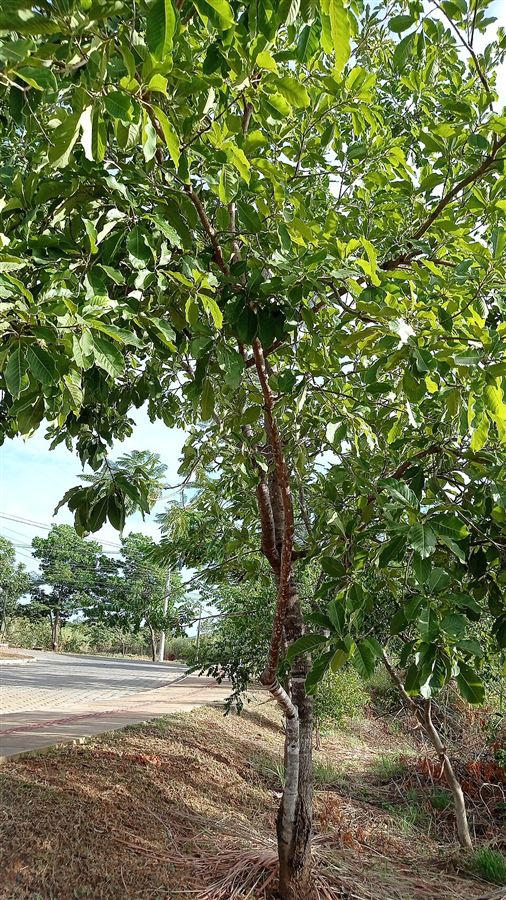
Foto: Mateusbotanica2020 · CC BY-SA 4.0 · Wikimedia Commons
Terminalia argentea
Pesquisado por compostos vegetais e usos tradicionais.
NOME CIENTÍFICO: Terminalia argentea.
DESCRIÇÃO: Árvore nativa que ocorre no Cerrado e apresenta folhas que podem adquirir uma aparência prateada, característica relacionada ao seu nome científico e à coloração da folhagem.
USO TRADICIONAL: Pesquisado por compostos vegetais e usos tradicionais.
CURIOSIDADE: Árvores nativas como essa ajudam a manter a biodiversidade e oferecem abrigo para diferentes organismos.
SEGURANÇA: Não há recomendação segura de consumo medicinal caseiro.
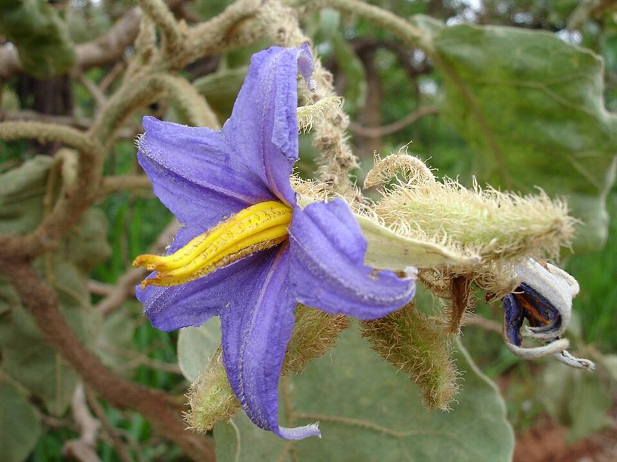
Foto: Fernando Tatagiba · CC BY 3.0 · Wikimedia Commons
Solanum lycocarpum
Nome popular da lobeira; pesquisada por seus compostos bioativos.
NOME CIENTÍFICO: Solanum lycocarpum.
DESCRIÇÃO: Arbusto ou pequena árvore bastante conhecida no Cerrado, que produz frutos arredondados e esverdeados. Também recebe o nome de lobeira.
USO TRADICIONAL: Nome popular da lobeira; pesquisada por seus compostos bioativos.
CURIOSIDADE: Seus frutos fazem parte da alimentação do lobo-guará, contribuindo para a dispersão das sementes da planta.
SEGURANÇA: Não consumir como remédio caseiro sem confirmação da espécie e da segurança.
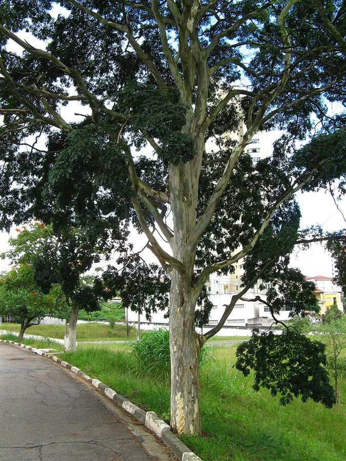
Foto: Mauroguanandi · domínio público · Wikimedia Commons
Libidibia ferrea
Tradicionalmente associado a usos anti-inflamatórios.
NOME CIENTÍFICO: Libidibia ferrea.
DESCRIÇÃO: Árvore nativa brasileira, conhecida por seu tronco resistente e pela aparência de sua casca. Ocorre em diferentes regiões do país, inclusive em áreas de vegetação sazonal.
USO TRADICIONAL: Tradicionalmente associado a usos anti-inflamatórios.
CURIOSIDADE: O pau-ferro também é utilizado na arborização e pode ser valorizado por sua madeira resistente.
SEGURANÇA: Não ingerir cascas ou extratos sem orientação profissional.
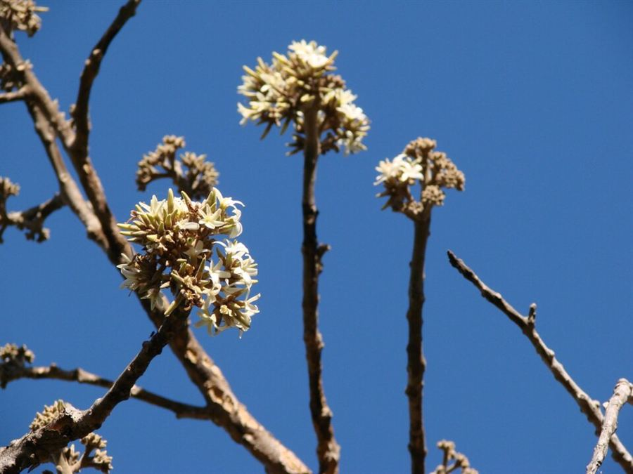
Foto: João Medeiros · CC BY 2.0 · Wikimedia Commons
Aspidosperma tomentosum
Uso popular em preparações tradicionais.
NOME CIENTÍFICO: Aspidosperma tomentosum.
DESCRIÇÃO: Árvore nativa encontrada em áreas do Cerrado. Pertence à família Apocynaceae, que reúne espécies com características variadas e algumas com substâncias biologicamente ativas.
USO TRADICIONAL: Uso popular em preparações tradicionais.
CURIOSIDADE: O nome guatambu pode ser utilizado para diferentes espécies de árvores, por isso a identificação científica é importante.
SEGURANÇA: A segurança varia conforme a espécie; não se recomenda a ingestão caseira.
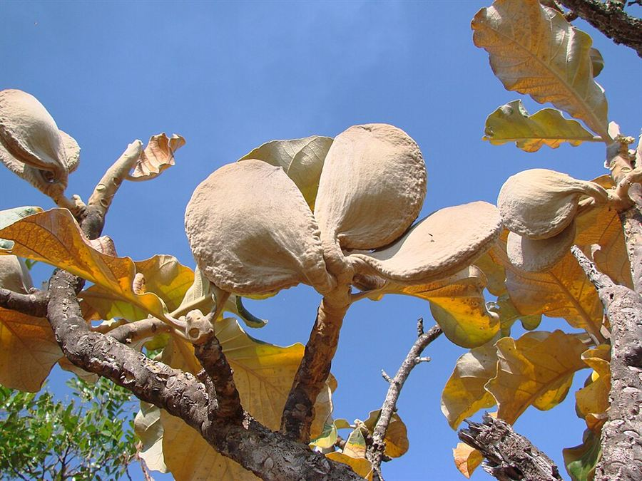
Foto: João de Deus Medeiros · CC BY 2.0 · Wikimedia Commons
Aspidosperma macrocarpon
Empregada em práticas tradicionais regionais.
NOME CIENTÍFICO: Aspidosperma macrocarpon.
DESCRIÇÃO: Árvore nativa de formações do Cerrado, pertencente ao mesmo gênero do guatambu apresentado anteriormente. Pode ser reconhecida por suas características de crescimento e frutos.
USO TRADICIONAL: Empregada em práticas tradicionais regionais.
CURIOSIDADE: O gênero Aspidosperma reúne diversas árvores brasileiras, algumas conhecidas por sua importância ecológica e pela presença de compostos químicos estudados pela ciência.
SEGURANÇA: Não há forma de consumo medicinal que possa ser recomendada com segurança.
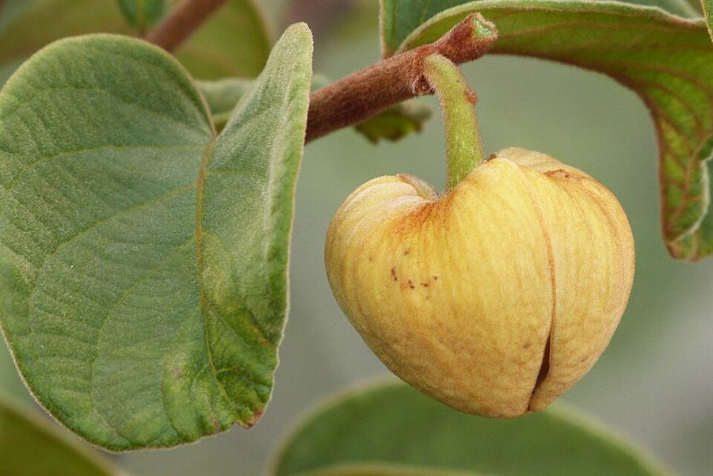
Foto: Evaldo Resende · CC BY-SA 4.0 · Wikimedia Commons
Annona crassiflora
Fruto nutritivo, fonte de fibras e compostos vegetais.
NOME CIENTÍFICO: Annona crassiflora.
DESCRIÇÃO: Árvore frutífera nativa do Cerrado que produz frutos grandes, de casca resistente e polpa de aroma marcante. Também é conhecida como araticum em algumas regiões.
USO ALIMENTAR: Fruto nutritivo, fonte de fibras e compostos vegetais.
CURIOSIDADE: O marolo é bastante valorizado na culinária regional, sendo utilizado em doces, sorvetes, sucos e outras receitas.
FORMA DE CONSUMO: Polpa madura em sucos, doces e outras receitas.
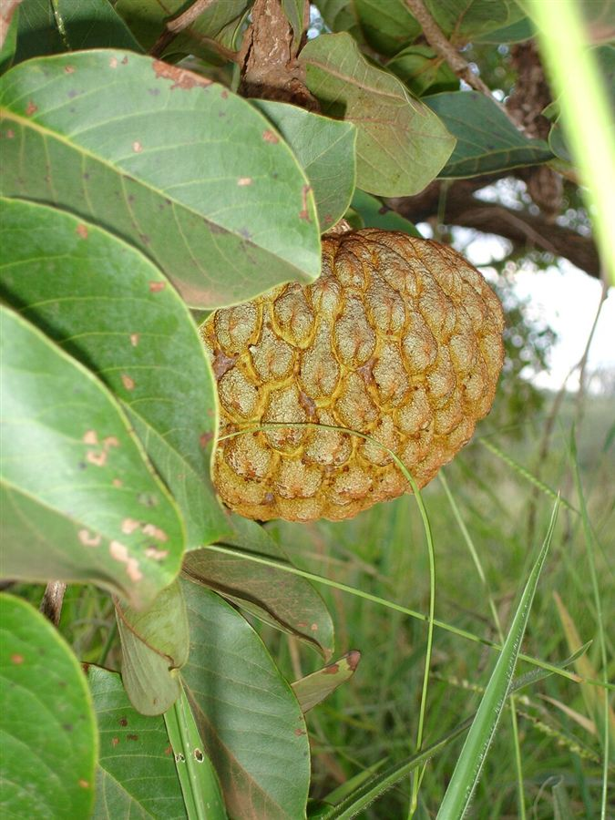
Foto: Fernando Tatagiba · CC BY 3.0 · Wikimedia Commons
Annona crassiflora
O nome científico apresentado é o mesmo do marolo; os nomes populares podem variar regionalmente.
NOME CIENTÍFICO: Annona crassiflora.
DESCRIÇÃO: O araticum, em muitas regiões, é o mesmo fruto conhecido como marolo. É uma árvore de crescimento lento, adaptada às condições do Cerrado, que produz frutos com polpa macia e sabor característico.
USO ALIMENTAR: O nome científico apresentado é o mesmo do marolo; os nomes populares podem variar regionalmente.
CURIOSIDADE: Seus frutos são importantes para a alimentação de animais silvestres e também são aproveitados pelas comunidades locais.
FORMA DE CONSUMO: Polpa madura em preparações alimentícias.
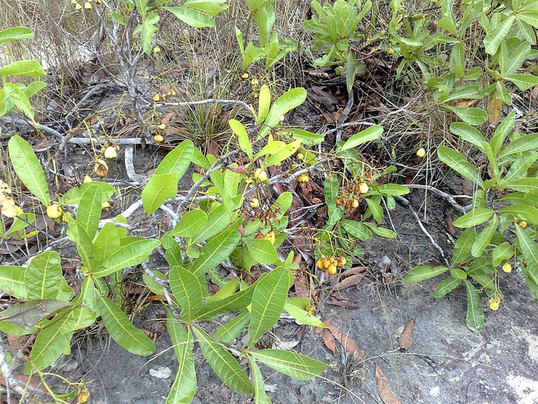
Foto: Dnbarros · CC BY-SA 3.0 · Wikimedia Commons
Anacardium humile
Fruto com vitamina C e outros nutrientes.
NOME CIENTÍFICO: Anacardium humile.
DESCRIÇÃO: Planta nativa de porte baixo, encontrada em áreas abertas do Cerrado. Produz um pseudofruto carnoso e uma castanha, características comuns às espécies do gênero Anacardium.
USO ALIMENTAR: Fruto com vitamina C e outros nutrientes.
CURIOSIDADE: Diferentemente do cajueiro comum, que geralmente é uma árvore, o caju-do-cerrado costuma apresentar crescimento rasteiro ou arbustivo.
FORMA DE CONSUMO: Pedúnculo maduro em sucos e doces; a castanha exige processamento adequado.
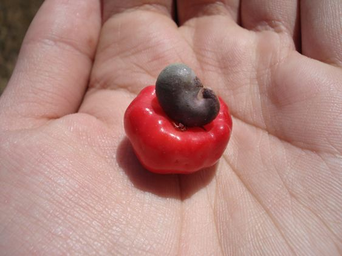
Foto: Brunoresende29 · CC BY-SA 3.0 · Wikimedia Commons
Anacardium humile
Outro nome usado para o caju-do-cerrado.
NOME CIENTÍFICO: Anacardium humile.
DESCRIÇÃO: Nome popular utilizado para o caju-do-cerrado, uma planta adaptada aos ambientes abertos e aos períodos de seca do bioma.
USO ALIMENTAR: Outro nome usado para o caju-do-cerrado.
CURIOSIDADE: Suas raízes e estruturas subterrâneas favorecem a sobrevivência da planta em condições ambientais difíceis.
FORMA DE CONSUMO: Fruto maduro em alimentos; não consumir castanhas cruas sem processamento apropriado.
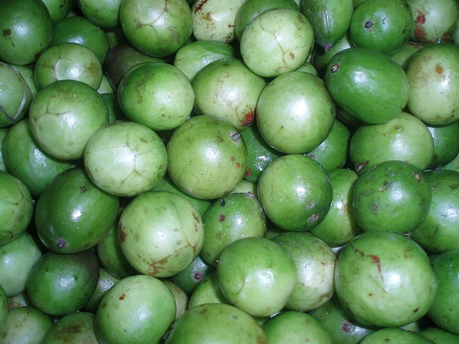
Foto: Daniele Gidsicki · CC BY 2.0 · Wikimedia Commons
Spondias tuberosa
Fruto com água, fibras e vitamina C.
NOME CIENTÍFICO: Spondias tuberosa.
DESCRIÇÃO: O umbuzeiro é uma planta conhecida por suas estruturas subterrâneas capazes de armazenar água. É mais característico da Caatinga, embora possa ser encontrado em áreas de transição entre biomas.
USO ALIMENTAR: Fruto com água, fibras e vitamina C.
CURIOSIDADE: O umbuzeiro é conhecido por sua resistência à seca, uma característica muito importante em regiões de clima quente.
FORMA DE CONSUMO: Polpa em sucos, doces e geleias.
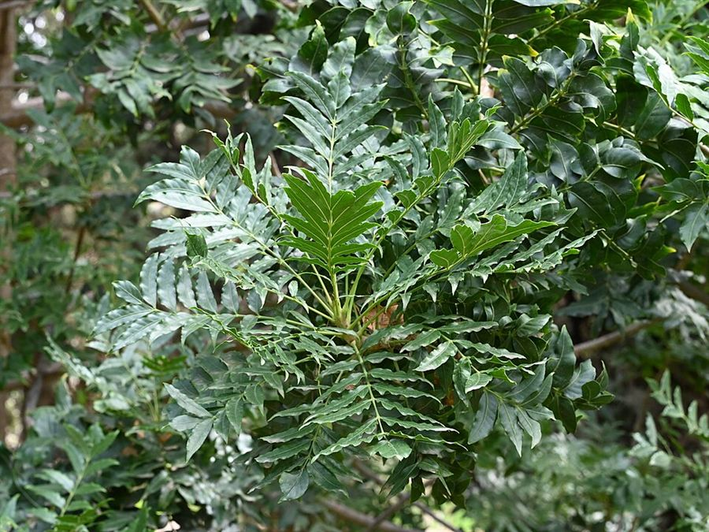
Foto: Krzysztof Ziarnek, Kenraiz · CC BY-SA 4.0 · Wikimedia Commons
Spondias mombin
Fruto com vitamina C e compostos antioxidantes.
NOME CIENTÍFICO: Spondias mombin.
DESCRIÇÃO: Árvore frutífera tropical que produz pequenos frutos amarelos, de sabor ácido e aroma característico. Ocorre em diferentes regiões brasileiras e não é exclusiva do Cerrado.
USO ALIMENTAR: Fruto com vitamina C e compostos antioxidantes.
CURIOSIDADE: O cajá é bastante utilizado na produção de polpas congeladas, sucos e sorvetes.
FORMA DE CONSUMO: Polpa madura em sucos e doces.
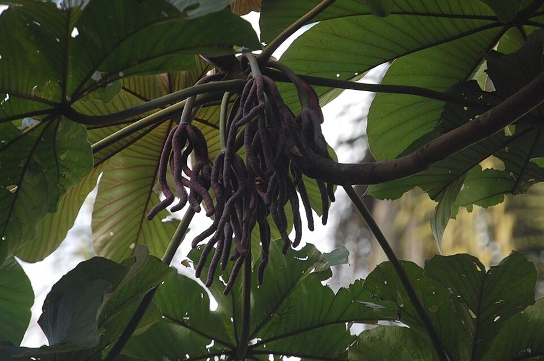
Foto: Carlo Brescia · CC BY-SA 4.0 · Wikimedia Commons
Cecropia pachystachya
Tradicionalmente associada a usos respiratórios e diuréticos.
NOME CIENTÍFICO: Cecropia pachystachya.
DESCRIÇÃO: Árvore de crescimento rápido, com tronco geralmente fino e folhas grandes, divididas em lobos. Pode ser encontrada em áreas abertas, bordas de matas e locais em regeneração.
USO TRADICIONAL: Tradicionalmente associada a usos respiratórios e diuréticos.
CURIOSIDADE: As embaúbas são importantes para a fauna, pois seus frutos alimentam diferentes animais. Também podem facilitar a regeneração natural da vegetação.
SEGURANÇA: Existem usos populares em infusões, mas não se recomenda o consumo medicinal sem confirmar a espécie e a segurança.
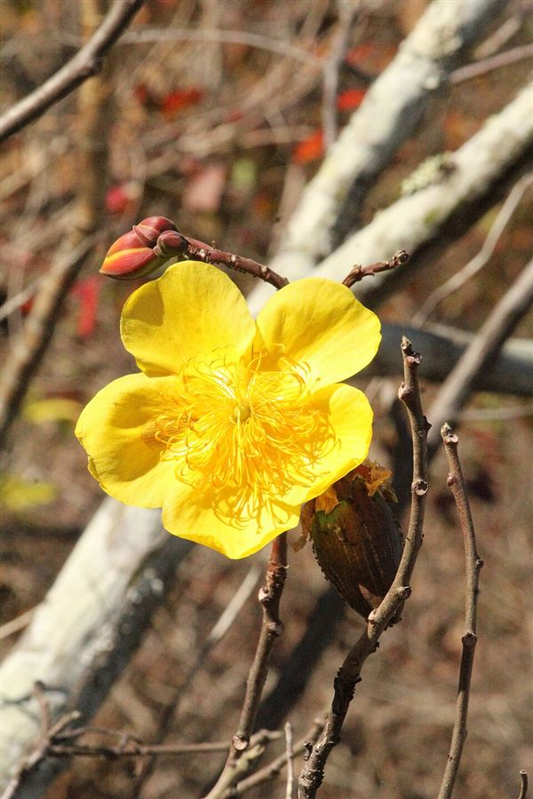
Foto: Paulo C. O. Cunha · CC BY 4.0 · Wikimedia Commons
Cochlospermum regium
Tradicionalmente associado a problemas inflamatórios.
NOME CIENTÍFICO: Cochlospermum regium.
DESCRIÇÃO: Planta nativa do Cerrado, conhecida por suas flores amarelas e por suas estruturas subterrâneas desenvolvidas, que ajudam na sobrevivência durante períodos desfavoráveis.
USO TRADICIONAL: Tradicionalmente associado a problemas inflamatórios.
CURIOSIDADE: Suas flores chamativas ajudam a destacar a planta na paisagem do Cerrado, especialmente durante a floração.
SEGURANÇA: Não consumir raízes ou extratos sem orientação especializada.
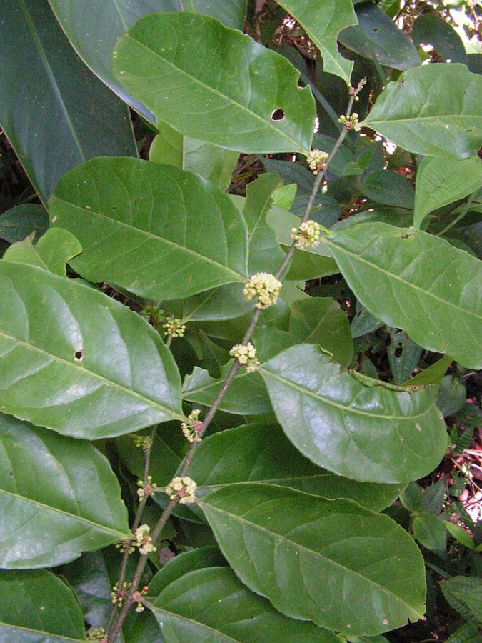
Foto: Tarciso Leão · CC BY 2.0 · Wikimedia Commons
Casearia sylvestris
Algumas espécies desse gênero são estudadas por possíveis efeitos anti-inflamatórios.
NOME CIENTÍFICO: Casearia sylvestris.
DESCRIÇÃO: Arbusto ou pequena árvore nativa brasileira, com folhas simples e pequenas flores. Pode ocorrer em diferentes formações vegetais, incluindo áreas de Cerrado.
USO TRADICIONAL: Algumas espécies desse gênero são estudadas por possíveis efeitos anti-inflamatórios.
CURIOSIDADE: A espécie é conhecida popularmente também como guaçatonga e tem sido objeto de pesquisas sobre substâncias presentes em suas folhas.
SEGURANÇA: Não há recomendação de ingestão caseira sem avaliação profissional.
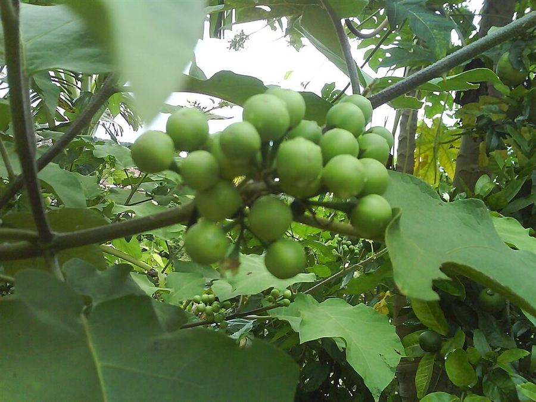
Foto: Jorge · domínio público · Wikimedia Commons
Solanum paniculatum
Tradicionalmente associada à digestão e ao funcionamento do fígado.
NOME CIENTÍFICO: Solanum paniculatum.
DESCRIÇÃO: Planta da família Solanaceae, que pode crescer como arbusto e produzir frutos pequenos e arredondados. Ocorre em várias regiões do Brasil.
USO TRADICIONAL: Tradicionalmente associada à digestão e ao funcionamento do fígado.
CURIOSIDADE: A jurubeba possui sabor amargo e é conhecida em preparações alimentares tradicionais de algumas regiões brasileiras.
SEGURANÇA: Algumas preparações alimentícias são tradicionais, mas a espécie e a parte utilizada devem ser confirmadas. Não usar para tratar doenças do fígado.
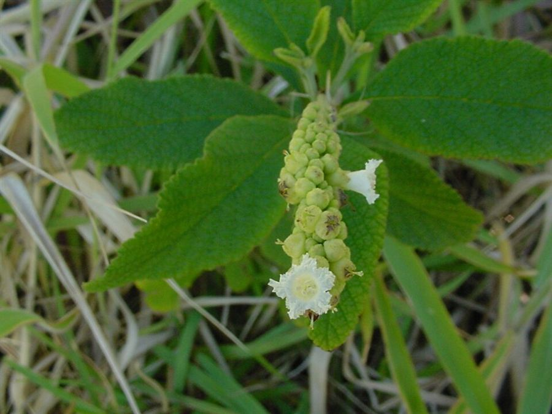
Foto: Marcia Stefani · CC BY 2.0 · Wikimedia Commons
Cordia verbenacea
Utilizada em produtos tópicos para aliviar dores e inflamações.
NOME CIENTÍFICO: Cordia verbenacea.
DESCRIÇÃO: Planta arbustiva encontrada principalmente em áreas costeiras e outras regiões brasileiras. Suas folhas são aromáticas e contêm substâncias estudadas por suas possíveis propriedades biológicas.
USO TRADICIONAL: Utilizada em produtos tópicos para aliviar dores e inflamações.
CURIOSIDADE: A erva-baleeira é utilizada como matéria-prima de medicamentos fitoterápicos regularizados no Brasil.
SEGURANÇA: Preferir produtos regularizados e seguir as orientações da embalagem.
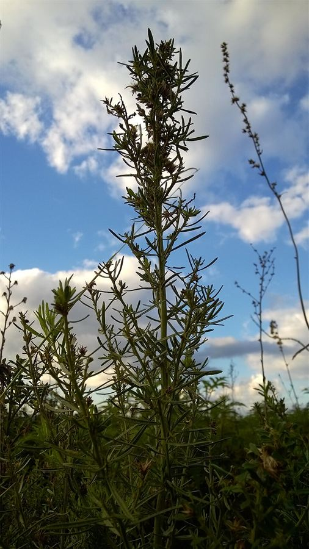
Foto: Renan.R.Mattos · CC BY-SA 3.0 · Wikimedia Commons
Varia conforme a espécie
Algumas espécies são estudadas por atividade antimicrobiana.
NOME CIENTÍFICO: A identificação depende da espécie; o nome popular pode designar plantas diferentes, inclusive espécies de outros gêneros.
DESCRIÇÃO: Nome popular utilizado regionalmente para plantas aromáticas encontradas em ambientes de Cerrado. A aparência e as características variam conforme a espécie.
USO TRADICIONAL: Algumas espécies são estudadas por atividade antimicrobiana.
CURIOSIDADE: Nomes populares como alecrim-do-cerrado podem ser compartilhados por plantas diferentes, tornando necessária a identificação botânica correta.
SEGURANÇA: Não se recomenda o chá medicinal sem confirmar a espécie; não confundir com outros alecrins.
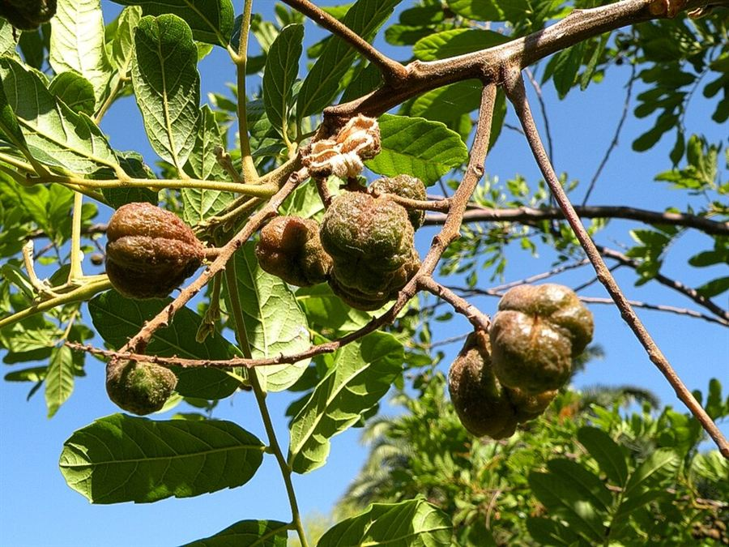
Foto: Anaderdeleon · domínio público · Wikimedia Commons
Cupania vernalis
Uso tradicional em preparações populares.
NOME CIENTÍFICO: Cupania vernalis.
DESCRIÇÃO: Árvore nativa brasileira que pode ser encontrada em diferentes formações vegetais. Possui folhas compostas e frutos que se abrem quando amadurecem.
USO TRADICIONAL: Uso tradicional em preparações populares.
CURIOSIDADE: Algumas espécies conhecidas como camboatá contribuem para a diversidade das florestas e áreas de transição do Cerrado.
SEGURANÇA: Não há recomendação segura de consumo medicinal caseiro.
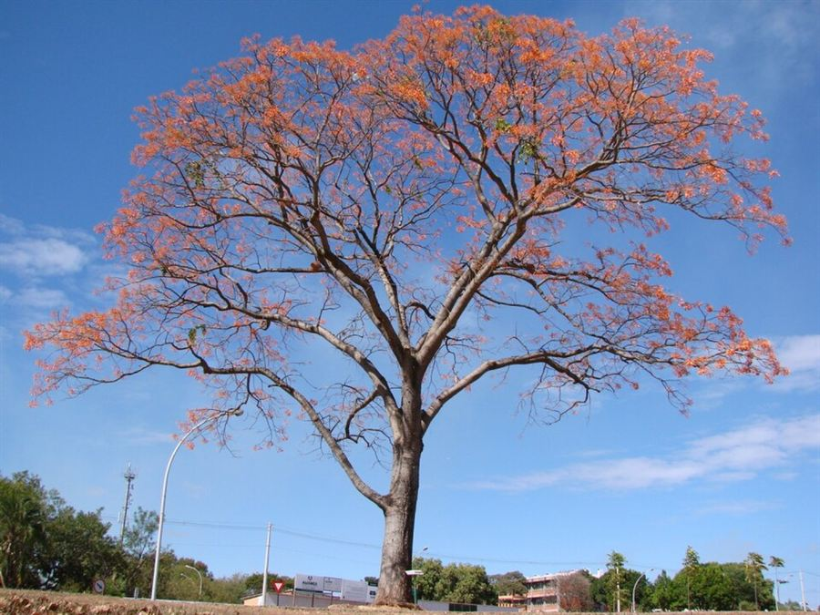
Foto: João Medeiros · CC BY 2.0 · Wikimedia Commons
Erythrina mulungu
Tradicionalmente associado ao relaxamento e ao sono.
NOME CIENTÍFICO: Erythrina mulungu.
DESCRIÇÃO: Árvore brasileira conhecida por suas flores de coloração intensa, geralmente avermelhadas ou alaranjadas. É associada a ambientes tropicais e pode ser encontrada em diferentes regiões do país.
USO TRADICIONAL: Tradicionalmente associado ao relaxamento e ao sono.
CURIOSIDADE: O mulungu pertence ao grupo das leguminosas e possui flores que atraem animais polinizadores.
SEGURANÇA: Pode provocar efeitos adversos e interagir com medicamentos; não preparar chás sedativos por conta própria.
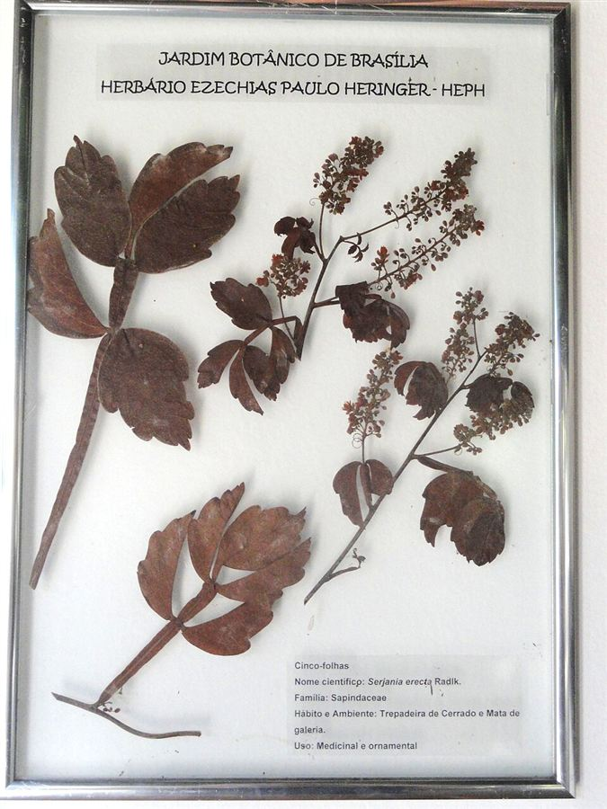
Foto: Daderot · CC0 · Wikimedia Commons
Serjania erecta
Algumas espécies contêm substâncias tóxicas para animais e outros organismos.
NOME CIENTÍFICO: Serjania erecta.
DESCRIÇÃO: Planta nativa encontrada em áreas de vegetação brasileira, pertencente à família Sapindaceae. O nome timbó também é utilizado para outras espécies vegetais.
USO TRADICIONAL: Algumas espécies contêm substâncias tóxicas para animais e outros organismos.
CURIOSIDADE: Historicamente, o nome timbó foi associado a plantas utilizadas por alguns povos indígenas na pesca, devido à presença de substâncias que afetam organismos aquáticos.
SEGURANÇA: Não consumir como alimento, chá ou remédio caseiro.
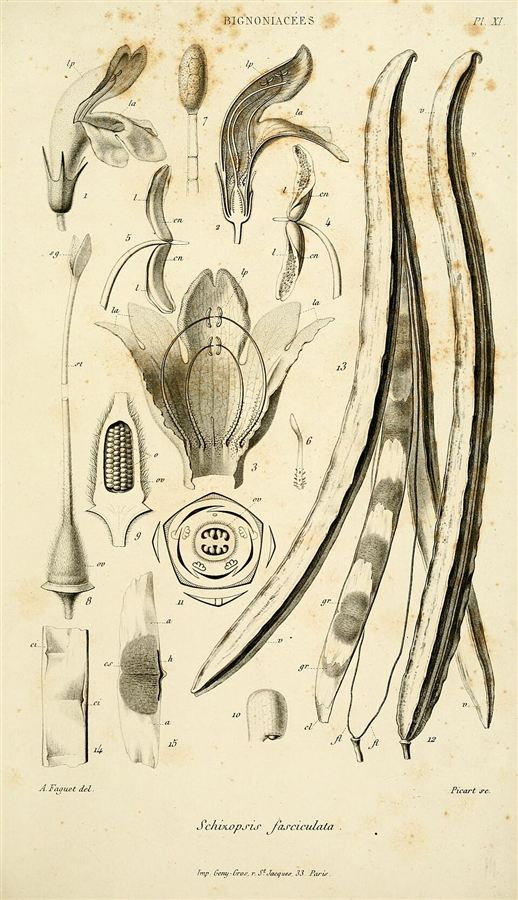
Ilustração: H. Baillon (1827–1895) · domínio público · Wikimedia Commons
Tynanthus fasciculatus
Tradicionalmente associado a usos digestivos.
NOME CIENTÍFICO: Tynanthus fasciculatus.
DESCRIÇÃO: Planta trepadeira nativa brasileira, capaz de crescer apoiada em outras plantas. Algumas espécies relacionadas possuem aroma que lembra o do cravo-da-índia.
USO TRADICIONAL: Tradicionalmente associado a usos digestivos.
CURIOSIDADE: O nome cipó-cravo está relacionado ao aroma característico atribuído a determinadas espécies desse grupo.
SEGURANÇA: A segurança medicinal depende da espécie e da preparação; evitar ingestão caseira.
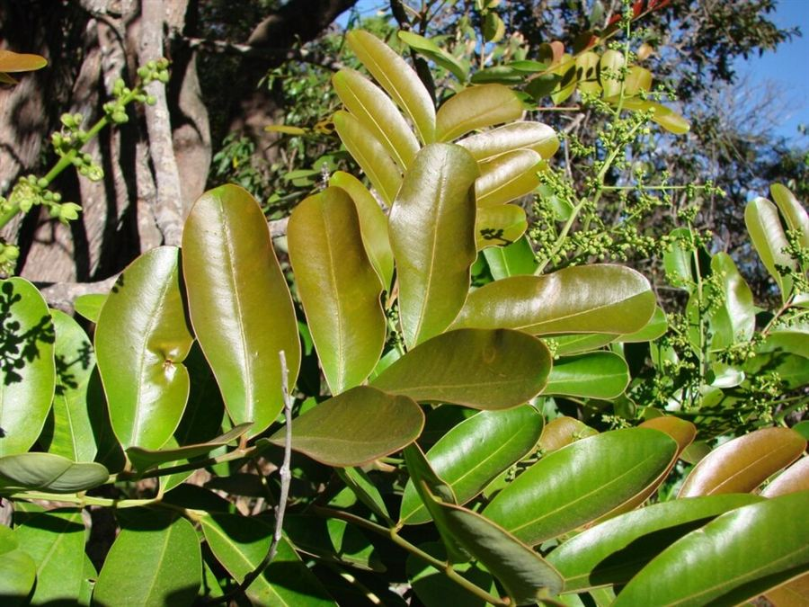
Foto: João Medeiros · CC BY 2.0 · Wikimedia Commons
Simarouba versicolor
Tradicionalmente associado ao estímulo da digestão.
NOME CIENTÍFICO: Simarouba versicolor.
DESCRIÇÃO: Árvore nativa do Brasil, encontrada em formações vegetais que incluem o Cerrado. Pertence à família Simaroubaceae, conhecida por reunir espécies com substâncias de sabor amargo.
USO TRADICIONAL: Tradicionalmente associado ao estímulo da digestão.
CURIOSIDADE: O sabor amargo de algumas plantas pode estar relacionado à presença de compostos químicos naturais, mas não comprova, por si só, eficácia medicinal.
SEGURANÇA: Não utilizar cascas, folhas ou extratos como medicamento sem orientação profissional.